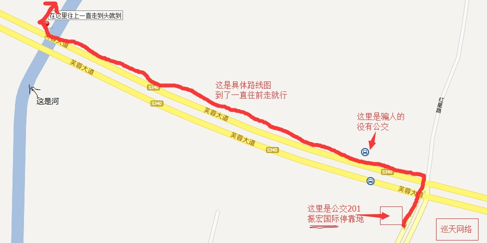

邀请您参加 盛永根 和 陈静 的婚礼
时间：
2014-3-22（周日）
地址：江苏省无锡市江阴市 华士镇 华西9村 万安桥112号
联系人：盛永根
手机号：
13552416883
或
17095138873
午饭晚饭都有，在自己家里吃，比较简陋
交通路线
自驾：
地图导航里搜索 ： 无锡市（空格）振宏国际
百度地图：
http://j.map.baidu.com/rrPg0
高德地图：
http://amap.com/014mBB
铁路：
1. 到无锡站后，隔壁客运站坐城乡公交到 华士。然后到了给我电话
2. 如果是到无锡东站的话，隔壁客运站坐车到张家港。到了之后给我电话。建议买到无锡站，不要买到无锡东站。
汽车：
买到江阴市，到了江阴市客运站后，隔壁有个 城乡公交 坐 201路 到 振宏国际 下。
按下面图10分钟后直接走到我家
具体的路线图，红色箭头位置，一直走到头就到

百度地图的大图
高德地图的大图